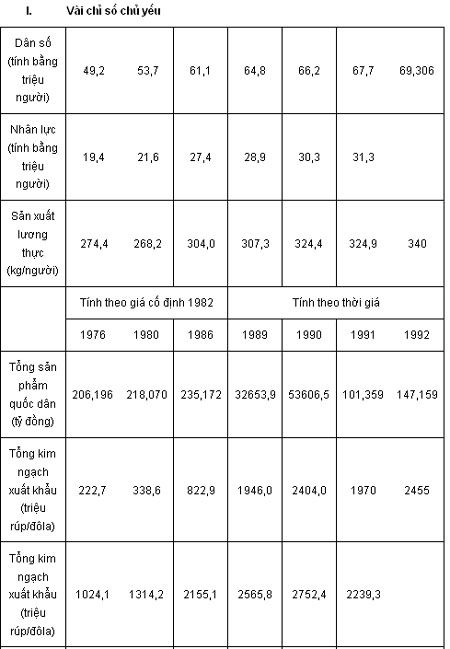
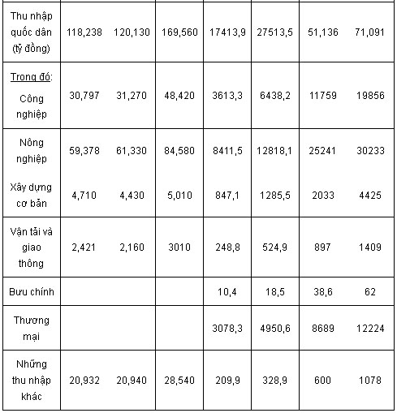

Các Vấn Đề
Nhà sử học không có nhiệm vụ đưa ra những dự đoán chính trị ngắn hạn, cũng không có quyền phiêu lưu vào lĩnh vực của tương lai học; nhưng ít nhất chúng tôi cũng thử phác họa với cách nhìn lướt qua lịch sử, và chốt lại một số vấn đề mà chúng tôi cho là có tầm quan trọng lớn nhất.
Từ khi bị Pháp chiếm làm thuộc địa, nước Việt Nam đã tìm bước, dù muốn dù không, hòa nhập vào thị trường quốc tế, quá trình hội nhập đã diễn ra từng chặng trên gần hai thế kỷ, được đánh dấu bằng một cuộc đấu tranh vũ trang lâu dài, có quy mô lớn, đưa đến những kết quả quan trọng và lâu dài. Người ta không thể nói đến Việt Nam mà không biết gì về cuộc “kháng chiến trường kỳ” đó, được bắt đầu bởi các sĩ phu yêu nước ở thế kỷ XIX, và kết thúc rực rỡ bằng việc giải phóng Thành phố Sài Gòn năm 1975. Quên đi lịch sử đầy kịch tính đó tức là tự dẫn mình đến chỗ không hiểu gì hết về Việt Nam. Còn đối với người Việt Nam, chối bỏ quá khứ đó tức là tự tách mình ra khỏi dân tộc Việt Nam.
Ngày nay, khi giai đoạn lịch sử đấu tranh vũ trang đã kết thúc, vấn đề đặt ra là phải biết liệu sự hòa nhập kinh tế vào thị trường thế giới do các công ty đa quốc gia thống trị, nơi mà Nhật Bản đã nổi lên như một siêu cường, và sự xuất hiện những “con rồng” châu Á mới đã tạo ra một khu vực phát triển và phồn vinh mới, một trường lực mới - trong những điều kiện như thế, liệu sự hội nhập đó sẽ thành công hay sẽ dẫn đến những thất vọng đắng cay và tai họa mới?
Để trả lời câu hỏi đó, người ta không thể chỉ bằng lòng với việc phân tích những dữ kiện quốc tế, bởi vì các điều kiện dân tộc nếu không đóng vai trò hàng đầu thì ít ra cũng có một tầm quan trọng ngang với các điều kiện quốc tế. Cuộc chinh phục thuộc địa, các cuộc chiến tranh, việc hội nhập vào thị trường thế giới đã dẫn đến sự phá vỡ từng bước, có khi tàn bạo, cấu trúc của xã hội truyền thống, và nước Việt Nam được giải phóng, độc lập, tái thống nhất, tự thấy mình có nghĩa vụ phải xây dựng một xã hội mới. Theo con đường nào?Trên những cơ sở nào?
Sau Cách mạng Tháng Tám năm 1945 - cuộc cách mạng đã dâng lên một cơn sóng thần ghê gớm, lôi cuốn hàng triệu con người ở mọi miền đất nước, thuộc mọi chính kiến khác nhau - trong suy nghĩ của nhiều người, phần lớn là người không đảng phái, sự việc có vẻ là đơn giản, cuộc đấu tranh để giành lại độc lập dân tộc theo “lẽ tự nhiên” sẽ được tiếp tục bằng việc xây dựng xã hội xã hội chủ nghĩa. Đảng Cộng sản lúc bấy giờ tuy mới chỉ có 5.000 đảng viên, nhưng vẫn được thừa nhận là người lãnh đạo độc tôn của phong trào dân tộc, vả chủ nghĩa Mác-Lênin là kim chỉ nam có thể giải quyết mọi vấn đề. Một khi chính quyền đã ở trong tay một Nhà nước nhân dân do Đảng Cộng sản lãnh đạo, thì con đường đã được vạch ra sáng tỏ và chính xác cho các công cuộc phá vỡ và cấu trúc lại xã hội lịch sử cần thiết theo một kế hoạch đã được xác định rất rõ ràng:
- Xóa bỏ chế độ phong kiến, loại trừ từng bước chủ nghĩa tư bản và nền kinh tư nhân, kinh tế thị trường.
- Cải cách ruộng đất triệt để và hợp tác hóa nông nghiệp, đích cuối cùng là thành lập những nông trường quốc doanh.
- Phát triển nhanh chóng khu vực kinh tế nhà nước nắm trong tay toàn bộ quá trình sản xuất - phân phối của cải vật chất theo một kế hoạch chi phối mọi chi tiết của các hoạt động kinh tế.
- Hội nhập vào “phe xã hội chủ nghĩa”, đối lập với ''phe đế quốc chủ nghĩa''.
Cùng với việc chia đất nước làm hai miền gần bằng nhau về diện tích và về số dân, một miền theo chế độ xã hội chủ nghĩa, một miền theo chế độ tư bản, đã bắt đầu một cuộc thử nghiệm thực sự trên quy mô lịch sử. Cho đến năm 1975, dường như miền Bắc - nơi đang xây dựng lên không chỉ những cấu trúc kinh tế mới mà cả những nền móng của một nền văn hóa và đạo đức dân tộc được đổi mới - đã rõ ràng hơn hẳn miền Nam, nơi kinh tế hoàn toàn lệ thuộc vào viện trợ ồ ạt của Mỹ và chịu đựng những tệ nạn xã hội nhiều vô kể.
Ngay cả khi đã thấy rõ mức sống của miền Nam cao hơn, người ta vẫn cho rằng sự tăng trưởng kinh tế đó dựa trên những cơ sở không lành mạnh, không có tương lai.
Quan niệm vấn đề trên cơ sở đối lập Bắc-Nam như vậy là đặt sai bài toán. Một khi sự chiếm đóng của Mỹ đã chấm dứt và đất nước đã tái thống nhất, thoát khỏi tình trạng chiến tranh đã làm cho mình bị cô lập với thế giới và trở thành một trường hợp ngoại lệ, Việt Nam lại gia nhập hàng ngũ các nước thuộc Thế giới thứ Ba và phải đương đầu với những vấn đề tương tự như các nước này. Sự tái thống nhất về hành chính và chính trị hai miền Bắc - Nam dưới quyền lực của một Nhà nước mới chỉ là một phần của một vấn đề nội bộ còn cơ bản hơn nhiều - vấn đề hội nhập dân tộc. Cũng như nhiều nước thuộc Thế giới thứ Ba, nước Việt Nam tiến lên độc lập, có một Nhà nước trung ương tập quyền, nhưng trên cơ sở dân tộc nào? Các nhà sử học Việt Nam còn khác ý nhau trên vấn đề này. Nước Việt Nam với lịch sử mấy nghìn năm đã là một dân tộc hay chưa? Hay còn có những giai đoạn khác nữa cần phải trải qua? Hẳn rằng tình cảm dân tộc đã bắt rễ sâu, bằng chứng là sự kháng cự quyết liệt chống mọi cuộc ngoại xâm. Nhưng từ đó mà tuyên bố rằng cộng đồng dân tộc Việt Nam, hiểu theo nghĩa hiện nay của từ này, đã được tạo lập thì còn nhiều bước phải vượt qua.
Không phải chỉ có sự chia cắt tạm thời Bắc Nam là phải giải quyết mà còn có cả một sự đa dạng vế địa lý, về tộc người, về tôn giáo, về ngôn ngữ (54 tộc người khác nhau) làm cho đất nước này như một bức tranh ghép lại từ nhiều mảnh, trong đó các yếu tố phải từng bước được hòa nhập vào trong một thực thể dân tộc đồng nhất sau một quá trình lịch sử lâu dài. Việc thành lập một thị trường dân tộc trên cơ sở xây dựng một mạng lưới giao thông và viễn thông hiện đại là tiền đề cần thiết, đòi hỏi công cuộc công nghiệp hóa thành công. Ngày nay, khi hòa bình đã được lập lại, công cuộc công nghiệp hóa đó có thể thực hiện được trong vòng vài thập kỷ, bởi vì việc áp dụng các công nghệ và làm chủ các kiến thức khoa học mới không phải là những trở ngại không thể vượt qua đối với nhân dân Việt Nam và đội ngũ trí thức của mình. Sự hội nhập dân tộc đòi hỏi phải giải quyết tuyệt nọc bệnh sốt rét ngã nước đã hàng bao thế kỷ nay ngăn cản việc khai phá những vùng rừng núi rộng lớn, phổ biến một ngôn ngữ dân tộc chung thông qua hệ thống trường học; việc gắn kết các tộc người khác nhau, các nhóm tôn giáo khác nhau cho đến bây giờ vẫn bị khép kín bên trong phạm vi khu vực cộng đồng của mình, việc kết hôn giữa người tộc này với người tộc kia, người thuộc tôn giáo này với người thuộc tôn giáo kia, nếu không bị cấm kỵ thì chí ít cũng rất khó khăn. Sự hội nhập dân tộc này, muốn tránh những rối loạn nghiêm trọng, phải bảo tồn các ngôn ngữ, các giá trị văn hóa của từng nhóm khác nhau, đồng thời lại phải đấu tranh chống những khuynh hướng ly khai. Việt Nam có ba nhóm tộc người đặc biệt khó hội nhập là người Hoa, người Khơ-me, người H'mông (Mèo). Về phía các nhóm tôn giáo, các tín đồ Công giáo chiếm 7-8% dân số cả nước, lập thành một giáo hội có cấu trúc vững chắc, từ hai thế kỷ nay đã bị coi (hoặc đúng hoặc sai) là đã cấu kết với các cường quốc phương Tây, từ ngày nước nhà giành lại được độc lập, họ đã có thể hòa nhập dễ dàng hơn vào cộng đồng dân tộc. Tuy vậy vẫn còn có vấn đề văn hóa, đạo Thiên chúa tuy du nhập vào Việt Nam đã lâu ngày nhưng vẫn còn giữ một tính chất ngoại lai khác với đạo Phật.
Việt Nam ở một ngã ba đường, ngay từ thời tiền sử đã chịu tác động của nhiều thứ ảnh hưởng rất khác nhau, đặc biệt là những ảnh hưởng đến từ Trung Quốc và Ấn Độ. Trên cơ sở một nền văn hóa dân gian luôn luôn sinh động, nền văn hóa bác học được dựng lên xuất phát từ sự hỗn hợp các học thuyết của Phật giáo, Đạo giáo và Khổng giáo. Từ ngày thiết lập những tiếp xúc với phương Tây bắt đầu từ thế kỷ XVII, nhiều nhân tố văn hóa đã làm phong phú thêm di sản chung: Thiên chúa giáo, khoa học và kỹ thuật thực nghiệm, các quan niệm tự do và dân chủ, và '' last but not the least " - đây là nhân tố cuối cùng nhưng không hề kém phần quan trọng: chủ nghĩa Mác. Việc đồng hóa các yếu tố văn hóa mới này là một trong những phần thiết yếu của vấn đề hội nhập dân tộc, của sự hình thành một nền văn hóa mới và của sự chuyển tiếp từ xã hội truyền thống sang xã hội hiện đại. Chúng tôi đã nói đến những khó khăn để đồng hóa những giá trị Thiên chúa giáo. Năm 1962, tôi đã đưa ra ý kiến (65): nhiều thế kỷ thấm nhuần Khổng giáo, chủ yếu mang tính chất duy lý và hướng tư tưởng người ta vào những việc của cuộc đời, đã chuẩn bị địa bàn cho chủ nghĩa Mác thâm nhập không quá khó khăn, ngoài ra người ta cũng có thể nghĩ rằng những tư tưởng của Cách mạng Pháp, nhất là truyền thống Gia-cô-banh, đã được những đầu óc thấm nhuần Khổng giáo chấp nhận khá dễ dàng và được những người mác-xít, với lý lẽ xác đáng, coi đó là những tiền đề lịch sử của học thuyết Mác.
Do Đảng Cộng sản đã nắm vai trò lãnh đạo trong cuộc chiến đấu vì nền độc lập dân tộc, do tính năng động đặc biệt của nó, một điều không thể chối cãi là chủ nghĩa Mác đã là nhân tố tác động mạnh mẽ nhất đến đời sống chính trị và văn hóa từ những năm 30. Trong chừng mực nào Đảng sẽ có thể đảm đương sự lãnh đạo tư tưởng, văn hóa của cả dân tộc? Câu hỏi này trực tiếp gắn liền với một câu hỏi khác: những cấu trúc xã hội-chính trị nào sẽ thích hợp với việc thiết lập một nền kinh tế thị trường? Chúng ta đã thấy ban lãnh đạo hiện nay của Đảng gạt bỏ như thế nào mọi ý kiến về chủ nghĩa đa nguyên vế tư tưởng và chính trị. Nhưng các câu hỏi không phải vì thế mà không đặt ra, ngay cả trong trường hợp sự tăng trưởng kinh tế, như người ta hy vọng sẽ đưa đất nước tiến lên một tình trạng tương đối phồn vinh. "Chủ nghĩa xã hội Việt Nam'' sẽ có những đặc điểm riêng gì? Hiện nay, nhân dân Việt Nam không còn phải đối đầu với một cuộc xâm lược quân sự, nhưng lại phải đối đầu với một nguy cơ thâm hiểm hơn: tự do hóa kinh tế, việc mở cửa đất nước cho tư bản nước ngoài đã làm nẩy sinh một thứ "chủ nghĩa tư bản hoang dã'' mà sự phát triển có nguy cơ dẫn đến những tai họa về sinh thái, làm gay gắt trầm trọng thêm những bất bình đẳng và tệ nạn xã hội, tội phạm, ma túy. Thứ ''chủ nghĩa tư bản hoang dã'' này huy động những bộ phận quan trọng trong bộ máy Nhà nước phục vụ cho nó, biến họ thành một tổ chức maphia thực sự, kẻ thù của mọi hình thức dân chủ, của công bằng xã hội và bảo vệ sinh thái. Liệu nhân dân Việt Nam, nếu không ngăn cản được sự bùng nổ của thứ chủ nghĩa tư bản hoang dã ấy, thì ít ra có hạn chế được những tàn phá của nó hay không? Đây là cuộc chiến đấu chống một kẻ địch mạnh, không thể khinh suất và chắc chắn sẽ phải lâu dài. Liệu cuộc chiến đấu đó có nguy cơ dẫn đến những cuộc đụng đầu vũ trang hay không? Những câu hỏi không chỉ riêng cho Việt Nam. Những câu hỏi mà cách giải quyết tùy thuộc nhiều nhân tố vô cùng phức tạp ở tầm quốc gia và quốc tế, những câu hỏi mà nhà sử học, vốn quen thấy sự việc xảy ra đột ngột - ở thời đại chúng ta, những sự kiện bất ngờ là không thể dự đoán - nay ngần ngại không muốn đưa ra một lời giải đáp theo hướng này hay hướng khác. Vả chăng, đây không phải là vai trò của sử gia; các nhà chép sử Việt Nam thời xưa, khi soạn ra một cuốn sử biên niên của các triều đại đều khiêm tốn gọi đó là những ''tấm gương", tự bằng lòng với công việc phản chiếu các sự kiện, đơn giản chỉ để giúp các vị vua chúa suy nghĩ về các vấn đề trị nước.
Cũng như mọi tấm gương, tấm gương mà tôi đã đưa ra cũng làm cho sự vật biến dạng ít nhiều - một tấm gương lệch, như cách nói thời thượng lúc này. Xin để phần người đọc có những ý kiến uốn nắn, nếu xét thấy cần thiết.
Tháng Giêng năm 1993
Năm con Gà
Chia sẽ ebook: http://downloadsachmienphi.com/
Tham gia cộng đồng chia sẽ sách: Fanpage: https://www.facebook.com/downloadsachfree
Cộng đồng Google:http://bit.ly/downloadsach
MỘT VÀI CON SỐ THỐNG KÊ

